这里是
参考：Getting started | React Navigation
在使用堆栈导航器之前需要安装一些基础包以及做一些响应的配置
开始安装
npm install @react-navigation/native
开始安装依赖包
npm install react-native-screens react-native-safe-area-context
你安装了吗？反正我安装好了，如下：
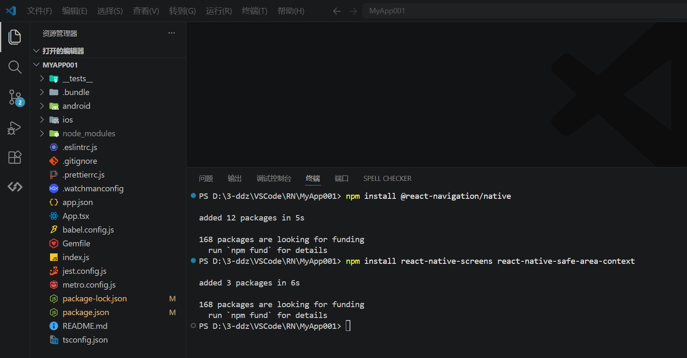
这里需要修改
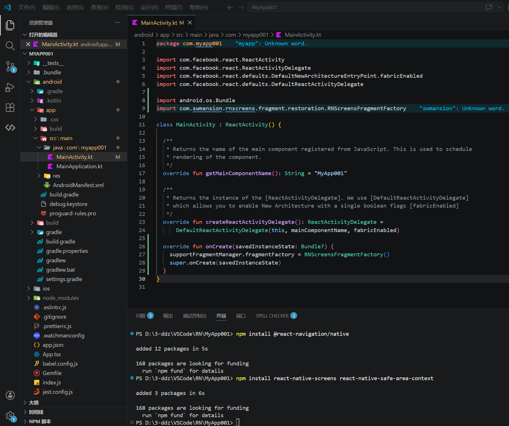
咱再对比一下，看下修改了哪些内容：
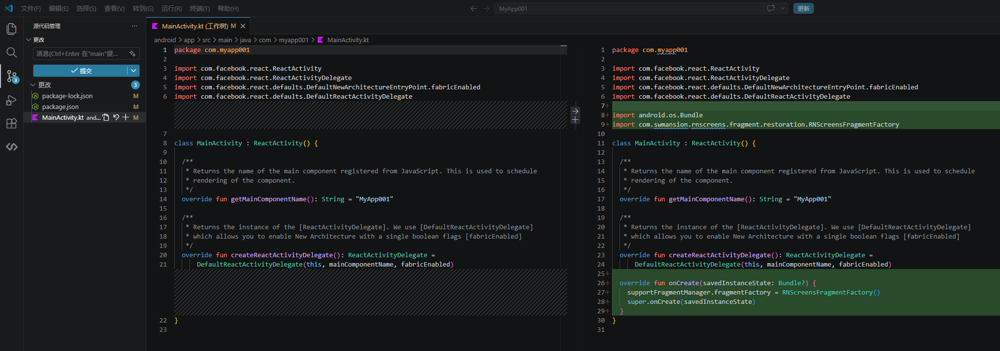
这里需要修改
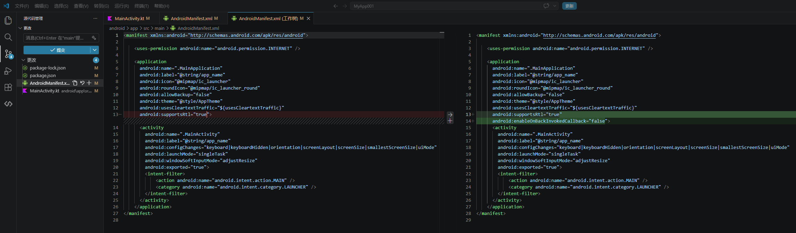
到这里咱都准备好了，下面开始正题了
npm install @react-navigation/native-stack
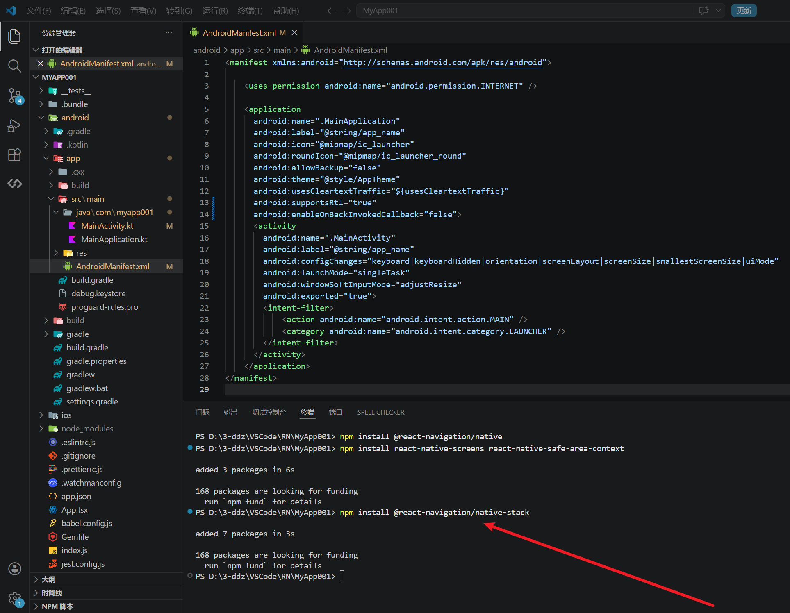
这里创建导航入口文件：
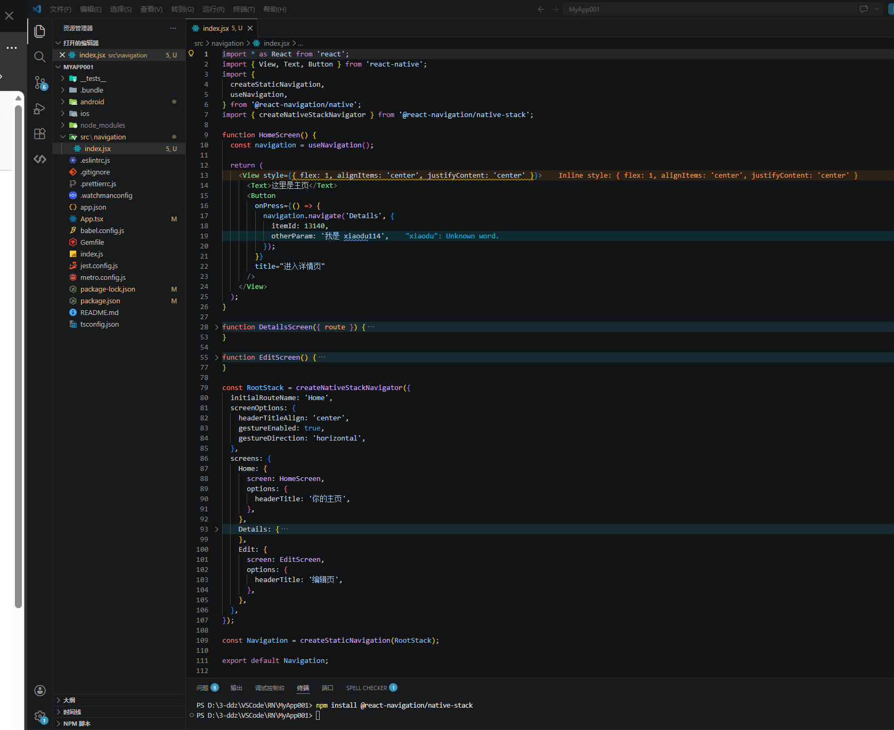
咱还得修改一下：
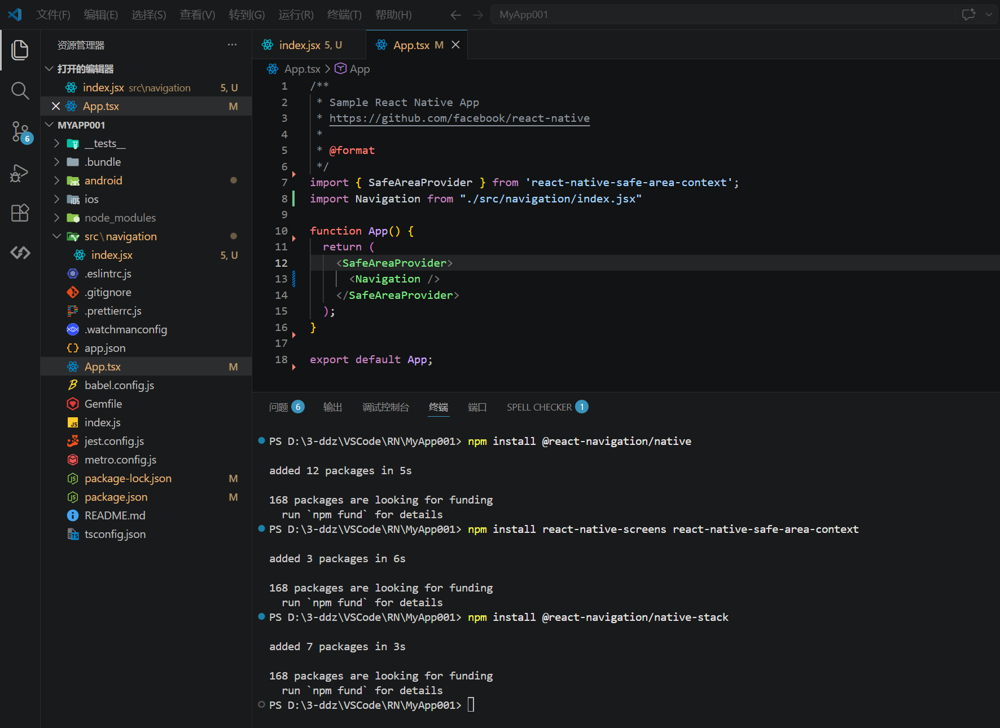
到这里咱都弄完了，赶紧运行试试吧
有了之前
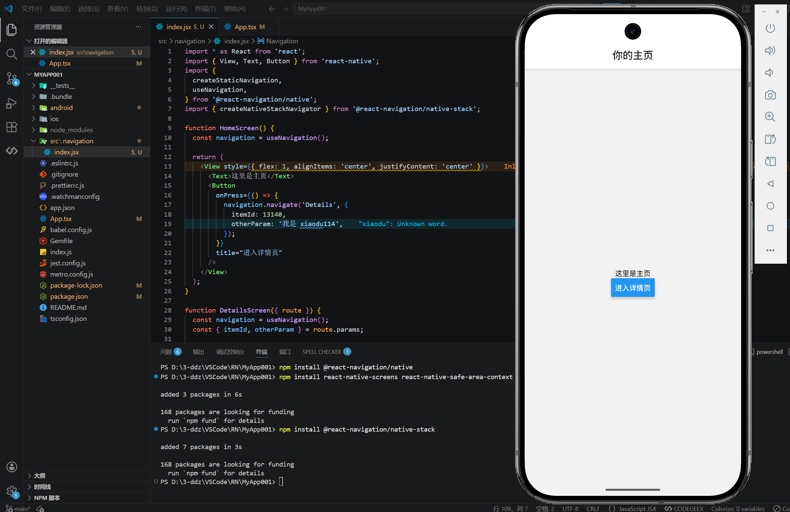
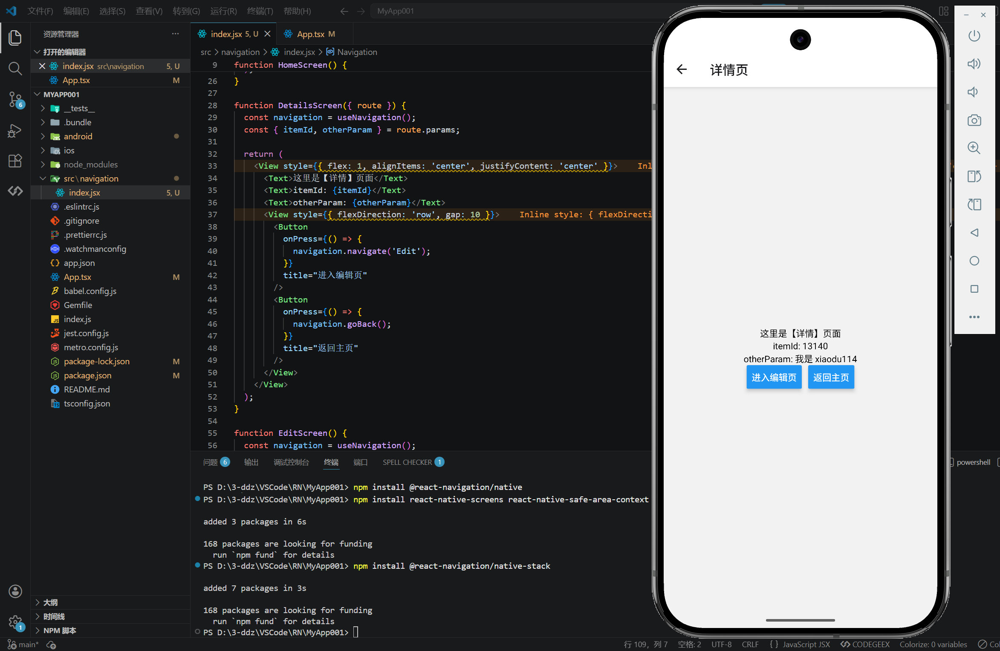
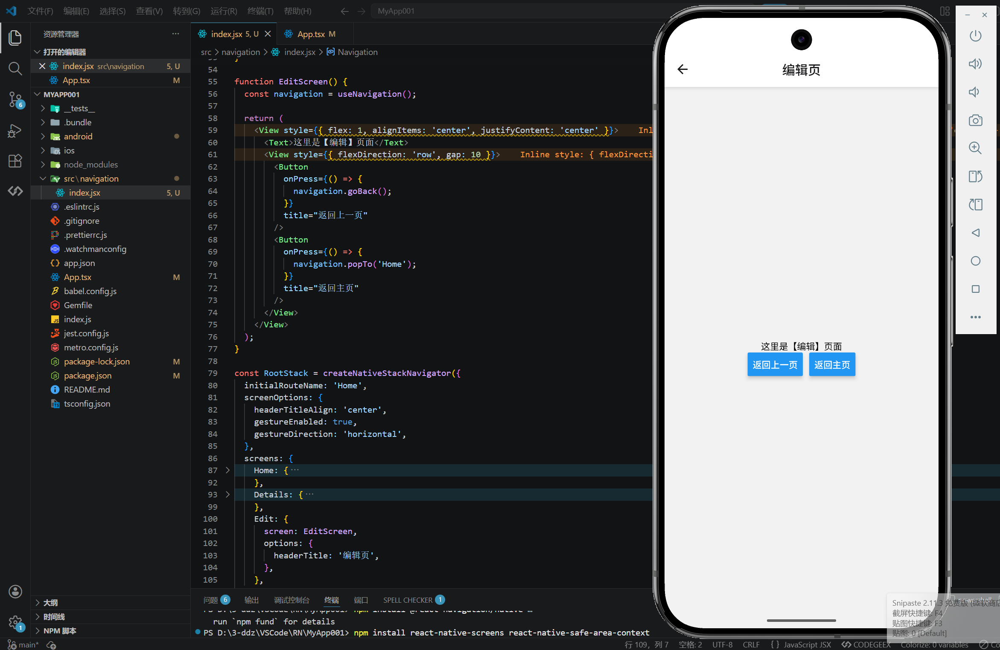
最后，咱再看一下在
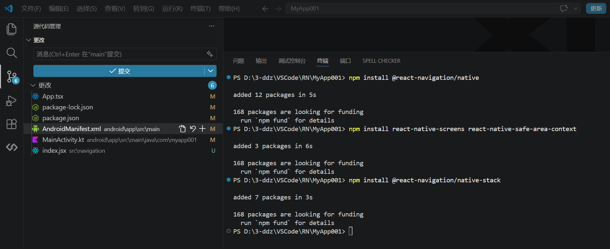